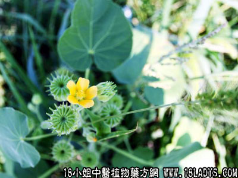

别名：磨档草、磨仔草。
植物名：磨盘草。
生长环境：本品为一年或多年生，直立、分枝、亚灌木状草本。常生于荒郊旷野地上。
入药部分：全株。
采集期：夏、秋。
自采地点：郊外荒地。
性味ie：性微凉、味淡。
功能：清肾火、疏风热，治久热不退有良效。
主治、用量和用法：1、骨蒸潮热：干用1至2两，清水煎服；2、痄腮：干用1至2两，猪瘦肉适量，清水煎服；3、疝气痛；4、肝经风热；5、耳痛，均用法同上；6、耳聋、耳鸣：干用1至2两，生鱼或塘虱鱼一条，清水煎，冲酒服。
验方：（治耳烂流脓验方）磨盘草2两、清水三碗，煎成一碗服，另用金钱吊芙蓉捣烂，榨汁滴耳。
（方解）磨盘草用通肾气作用，其性清凉解毒，为儿科专药，故可用治耳疮、中耳炎等。金钱吊芙蓉民间多栽植于盆上以备药用，其叶略似于崩大碗，厚而有茸毛，含水分甚多，善治耳疮、疔疮等。作为外用剂。
（方歌）耳烂常流秽浊脓，单方金钱吊芙蓉，捣取液浆滴耳内，消炎善治耳中痛，更煎磨盘草二两，服之通肾显奇功。
附录：（根）治胃痛：干根1至2两，鸡肉适量，清水煎服。
本文解释权归中药大全，本文地址：https://www.daquan.com/post/1604.html